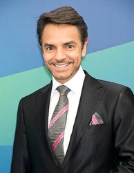
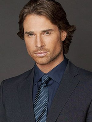
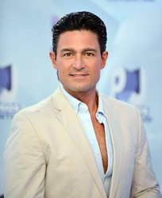
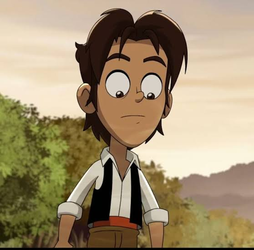
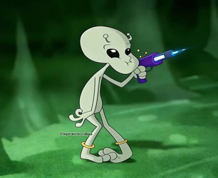
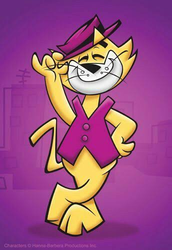

La televisión en México ha sido el pilar de socialización más potente de su historia moderna, transformando las dinámicas del hogar y moldeando la opinión pública. Desde su llegada, unificó las rutinas de la sociedad: acompañó el crecimiento de los infantes con barras educativas y cómicas que alimentaron la imaginación infantil, definió el entretenimiento de jóvenes y adultos con barras de drama cotidianas, y se consolidó como la compañía constante de los adultos mayores a través de informativos y programas de variedades. Ningún otro medio logró reunir a tantas generaciones simultáneamente frente a un mismo espacio familiar.
| Nombre del Canal | Año de Fundación | Principales Figuras del Canal | Principales Áreas de Reconocimiento |
|---|---|---|---|
| Canal 5 | 1952 | Chabelo Roberto Gómez Bolaños Ramiro Gamboa "Tío Gamboín" |
|
| Azteca Uno (Canal 7) | 1993 | Christian Martinoli Pati Chapoy Javier Alatorre |
|
| Televisa / TUDN | 2019 | "El Perro" Bermúdez Toño de Valdés David Faitelson Andrés Vaca |
|
| Periodo de Tiempo | Telenovelas y Programas de Comedia Populares | Actores y Protagonistas Principales |
|---|---|---|
| Periodo 2000 - 2005 | 1. La familia P. Luche (Comedia) 2. Abrázame muy fuerte (Telenovela) 3. Rubí (Telenovela) |
Eugenio Derbez y Consuelo Duval Aracely Arámbula y Fernando Colunga Bárbara Mori, Eduardo Santamarina y Sebastián Rulli |
| Periodo 2005 - 2010 | 1. Destilando amor (Telenovela) 2. Vecinos (Comedia) 3. María de Todos los Ángeles (Comedia) 4. Una Familia de Diez (Comedia) |
Angélica Rivera y Eduardo Yáñez Eduardo España, César Bono y Mayrín Villanueva Mara Escalante y Ariel Miramontes Jorge Ortiz de Pinedo y Zully Keith |
| Periodo 2010 - 2015 | 1. Porque el amor manda (Telenovela) 2. Teresa (Telenovela) 3. Amores verdaderos (Telenovela) 4. Soy tu dueña (Telenovela) |
Fernando Colunga y Blanca Soto Angelique Boyer, Sebastián Rulli y Aarón Díaz Erika Buenfil, Eduardo Yáñez, Eiza González y Sebastián Rulli Lucero y Fernando Colunga |
| Periodo 2015 - 2020 | 1. Nosotros los guapos (Comedia) 2. Mi marido tiene familia (Telenovela) 3. La piloto (Telenovela) 4. 40 y 20 (Comedia) |
Adrián Uribe y Ariel Miramontes Zuria Vega y Daniel Arenas Livia Brito y Arap Bethke Jorge Van Rankin y Mauricio Garza |

Eugenio Derbez

Sebastian Rulli
Angelique Boyer

Fernando Colunga
| Serie o Película Animada | Año y Estudio Desarrollador | Personajes Principales | ¿De qué trata? |
|---|---|---|---|
| Don Gato y su Pandilla | 2011 Ánima Estudios / Warner Bros |
Don Gato, Benito, Bodoque, Oficial Matute | Una astuta pandilla callejera enfrentándose a un nuevo jefe de policía que planea controlar la ciudad mediante un ejército de robots tecnológicos, obligando a los felinos a idear un ingenioso plan para recuperar su callejón. |
| Una película de huevos | 2006 Huevocartoon Producciones |
Toto, Willy, Tocino, Confi | Un huevo de gallina anhela convertirse en un pollo de granja, por lo cual emprende una audaz fuga de la cocina junto a un huevo sargento y un desmemoriado huevo de ganso para escapar de un restaurante citadino. |
| El Chavo Animado | 2006 (Serie de TV) Ánima Estudios / Televisa |
El Chavo, Quico, Don Ramón | Adapta la legendaria serie "La vecindad del Chavo", enfocada en las divertidas travesuras infantiles de su protagonista, El Chavo del 8, junto a sus amigos viviendo diversas aventuras que expanden el universo original. |
| Las Leyendas | 2011 Ánima Estudios |
Leo San Juan, Teodora Villavicencio, Don Andrés y El Alebrije | Relata el peligroso viaje de un valiente niño cazafantasmas hacia los canales antiguos de Xochimilco para liberar al pueblo de una de las leyendas más conocidas de México, las apariciones espectrales más temidas del folclore nacional. |

Leo San Juan

El Chavo del 8

Don Gato
Las cortinillas que todos recordamos.